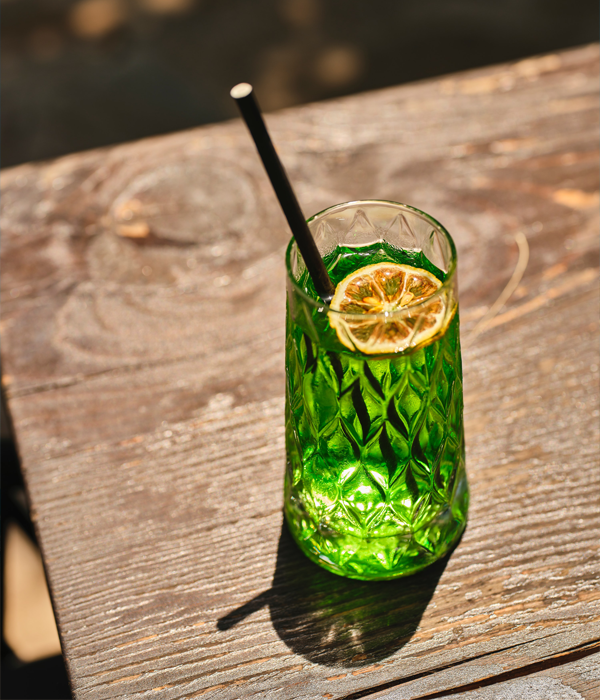

culture

Old cars
In downtown Havana, the capital of Cuba, you can see colorful old cars. Cadillac, Buick, and Ford were produced in the 1940s and 50s. Old Car is a legacy created by the break of diplomatic ties with the United States in 1961 after the 1959 Cuban Revolution
-
- Cuba's Old Cars Shining Cuba
- Cars in Cuba mainly consist of vintage, American-made automobiles that date back to as early as the 1940s. These commodities come from large companies, such as Chevrolet, Buick, and Ford models. The reason behind this abundance of old-fashioned cars was due to the U.S.
-
- Background of Cuba's Old Car
- Despite the tourist appeal to the antique vehicle, Cuba's cars are probably one of the most culturally stimulating aspects of the country. Vintage American cars still live in the heart of Havana, which is mainly used as taxis. The automobile industry in Havana, a famous tourist city, relies heavily on the interests of tourists who spend $20-$30 on taxis to get a full "vintage car experience."
-
It may be convenient to own a car, but the streets of Cuba are often relatively quiet. Because of its communist regime, private ownership of materials such as cars was illegal in Cuba from 1959 to 2011. As a result, the vast majority of locals have never owned a car personally, or if they did, they would have owned it before 1959. But vintage American cars still live in the heart of Havana, which is mainly used
Salsa
The term salsa is a rhythmic dance developed by Cubans and Puerto Ricans who moved to New York in the 1950s-60s, derived from the Spanish word "sal" meaning salt and "salsa" meaning sauce
-
- Salsa culture in Cuba
- Cuba, known as casino, known as casino, known as casino is sold overseas to distinguish from other living in Cuba to distinguish between other living styles, or Salsa Temple.Dance casino is the representative of Cuba's popular social culture, and many Cuba considered as part of social and cultural activities
-
- Casino style
- The casino adds dance at three points to each other with a complex pattern of arms and body movement.This is distinguished from North America and European dance studio that teaches in North America and European dance studio.
-
Every year, many people from all over the world visit Havana to learn the dance. In addition, it is gaining huge popularity in the U.S. thanks to the popularity of Latin music such as Ricky Martin and Gloria Estefan.
Caribbean
The Caribbean Sea is the Dadohae Sea, collectively referred to as the Caribbean Islands or the Caribbean Islands
-

- The beautiful Caribbean Sea that surrounds Cuba
- The Caribbean Sea is a sea bordering the Atlantic Ocean and the Gulf of Mexico. It covers an area of 2,754,000 square miles (1,063 billion square miles). The deepest point is the Cayman Trench between Cuba and Jamaica, which is 7,684 m (25,220 ft) deep. It is a sea area surrounded by the Antilles Islands in the east, the Caribbean Sea in the south, the Central American Isthmus in western South America, and the Antilles Islands in the north.
-
- History of the Caribbean
- Since Christopher Columbus discovered the Caribbean as the first region of the New World in 1492, it has become a venue for colonial battles in Spain, Britain, and France during the Great Navigation Period, and has been a key point of maritime transportation between Europe and America since the colonial period. Due to this historical background, the area has also become a major stage for piracy. It is said that it was difficult to track down because there were many islands because pirates could hide or use them as their base.
-
The islands of the Caribbean are largely divided into Greater Antilles and Lesser Antilles, all of which are called the Caribbean Islands. These islands are the territories of various countries, including Cuba, Jamaica, and the Dominican Republic.
Mojito
-

- Cuban traditional punch
- Mojito is traditional Cuba funds.cocktail often consists of white, sugar, sugar, lime juice, lime juice, lime juice, and mint.However, the combination of the Chromus, the combination of Manchester United was made as popular summer drink.
-
- Hemingway's favorite drink
- Mojito has been routinely introduced as a favorite drink by writer Ernest Hemingway. It is often said that Hemingway became a regular, making the bar la board guitar del medio famous and writing "my mojito of la board guitar, my daikiri of el florida" on the wall. The inscription, handwritten and signed in his name, persists despite doubts expressed by Hemingway biographers about such patronage and the author's taste in mojito
-
Some hotels in Havana use powdered sugar with mint leaves because it melts better, while many facilities use simple syrup instead."Rose mojito," a mojito variant containing Ranique, a rose-scented distilled liquor, was first made at Albert Schloss Bar in Manchester, England